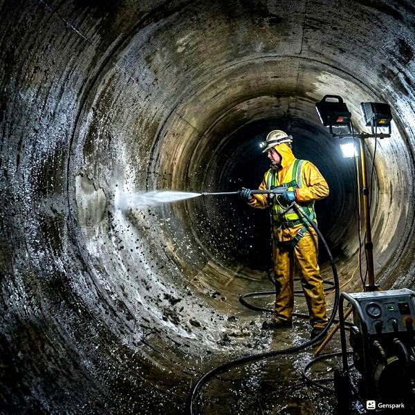
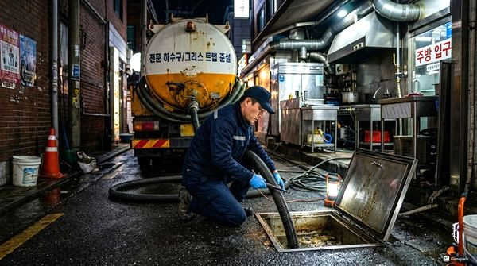
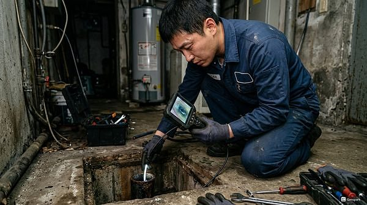

집안 하수구 냄새 완벽 해결 - 원인별 맞춤 대처법
2026년 4월 12일 | 제우스시설관리

집안에서 하수구 냄새가 올라오면 생활 전체가 불쾌해집니다. 특히 비가 오거나 바람이 강한 날에 냄새가 심해진다면, 이는 배관 시스템에 문제가 있다는 신호입니다. 원인을 정확히 파악해야 근본적으로 해결할 수 있습니다.
하수구 냄새의 가장 흔한 원인은 트랩 봉수 파괴입니다. 배수구 아래에 있는 트랩에는 물이 고여 하수 가스를 차단합니다. 이 물이 증발하면 하수 냄새가 직접 올라옵니다. 자주 사용하지 않는 화장실이나 베란다 배수구에서 많이 발생합니다. 해결법은 간단합니다. 물을 부어 봉수를 채워주세요.

두 번째 원인은 배관 내부 오물 축적입니다. 배관 벽면에 쌓인 기름때, 비누 찌꺼기, 머리카락 등이 부패하면서 악취를 발생시킵니다. 이 경우 고압세척기로 배관 내벽을 깨끗하게 세척해야 냄새가 완전히 사라집니다.
세 번째 원인은 배관 연결부 틈새입니다. 배관과 배관 사이, 또는 배관과 바닥 사이에 틈이 생기면 하수 가스가 새어나옵니다. 실리콘이나 방수 테이프로 틈새를 밀봉하면 해결됩니다.

냄새가 지속된다면 더 깊은 문제일 수 있습니다. 제우스시설관리는 내시경 카메라로 배관 내부를 직접 확인하고, 관로탐지기로 배관 구조를 파악하여 냄새 원인을 100% 찾아냅니다. 28분 내 출동, 전화: 010-4406-1788